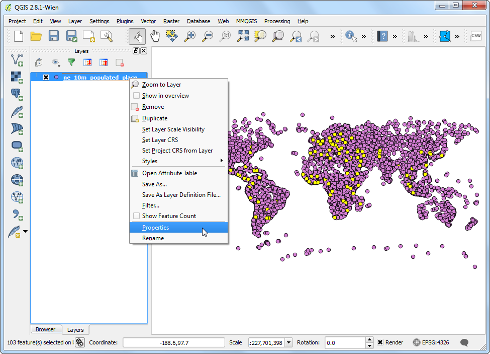
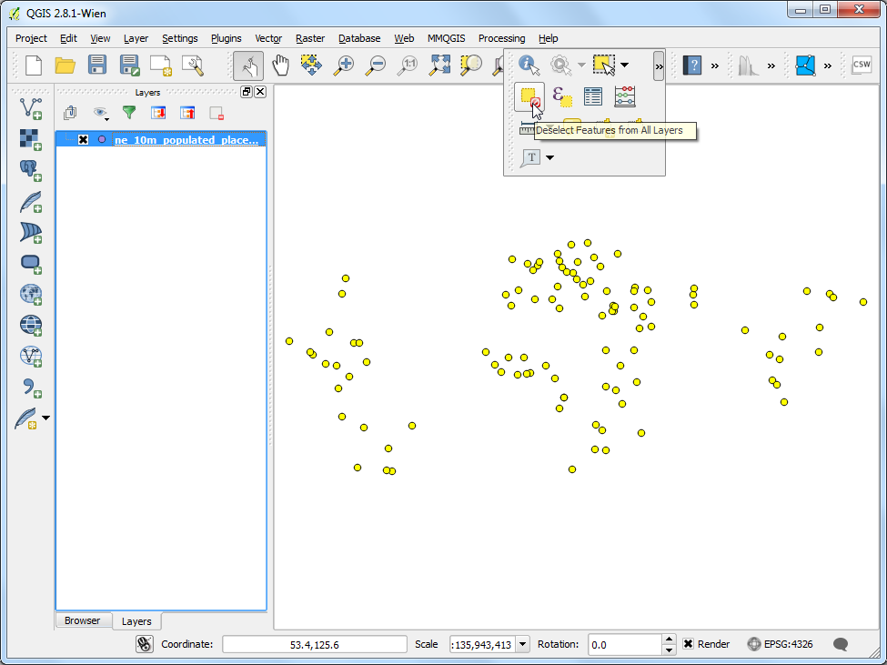
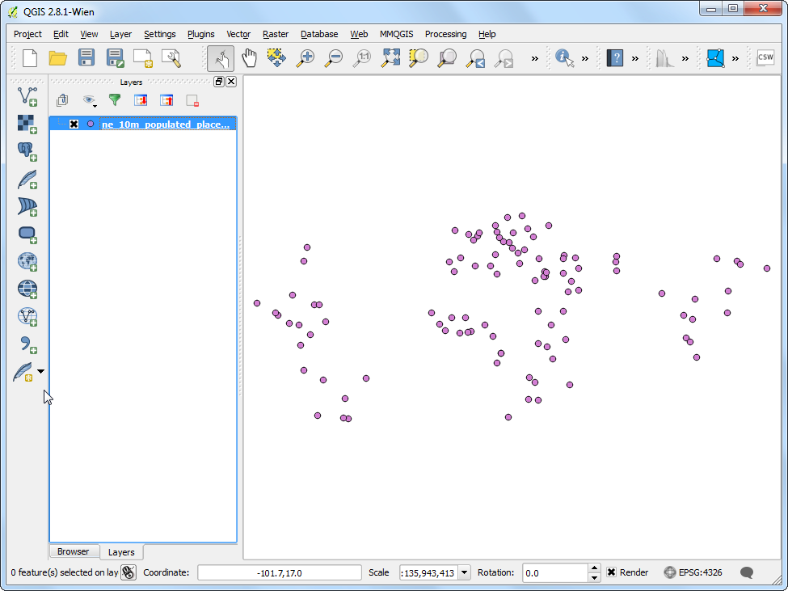

속성작업
[ Download PDF A4 Letter ]
GIS 데이터는 두가지가 있습니다. 피처와 속성. 속성은 각 피처에 대한 구조데이터입니다. 이 튜토리얼에서는 QGIS에서 속성을 어떻게 보며 속성에 대한 기본 조회방법을 보여줍니다.
작업 개요
이 튜토리얼의 데이터셋은 세계의 인구분포에 대한 정보가 포함되어 있습니다. 작업은 전 세계를 대상으로 인구 1,000,000명을 초과하는 수도에 대한 조회와 찾기입니다.
Other skills you will learn
- Select features from a layer using expressions.
- Deselect features from a layer using the Attributes toolbar.
- Using Query Builder to show a subset of features from a layer.
과정
- Once you have downloaded the data, open QGIS. Go to .

- Click on Browse and navigate to the folder where you downloaded
the data.

- Locate the downloaded zip file ne_10m_populated_places_simple.zip. You do
not need to unzip the file. QGIS has the ability to read zip files directly.
Select the file and click Open.

선택된 레이어가 QGIS에 올라오고 세계지도에 인구분포를 나타내는 많은 점들을 보게 됩니다.

- Right-click the layer and select Open Attribute Table.

다양한 속성과 해당 값들을 살펴봅니다.

각 피처에서 인구에 관심이 있는데, `pop_max`가 찾는 필드입니다. 필드 헤더를 더블클릭하면 내림차순으로 정렬할 수 있습니다.

- Now we are ready to perform our query on these attributes. QGIS uses
SQL-like expressions to perform queries. Click Select features
using an expression.

- In the Select By Expression window, expand the Fields
and Values section and double-click the pop_max label. You will notice
that it is added to the expression section at the bottom. If you aren’t
sure about the field values, you can click the Load all unique
values to see what the attribute values are present in the dataset. For
this exercise, we are looking to find all features that have a population
greater than 1,000,000. So complete the expression as below and click
Select.

- Click on Close and return to the main QGIS window. You will
notice that a subset of points is now rendered in yellow. This is the
result of our query and you are seeing all places from the dataset that
have the pop_max attribute value greater than 1,000,000.

- The goal for this exercise is to find the places that are country capitals.
The field containing this data is adm0cap. The value 1 indicates that
the place is a capital. We can add this criteria to our previous expression
using the and operator. Let’s refine our query to select only those
places which are capitals. Click on the Select feature using an
expression button in the attribute table and enter the expression as below
and click Select and then Close.
"pop_max" > 1000000 and "adm0cap" = 1

- Return to the main QGIS window. Now you will see a smaller subset of the
points selected. This is the result of the second query and shows all
places from the dataset that are country capitals as well as have
population greater than 1,000,000. If we wanted to do some further analysis
on this subset of data, we can make this selection persistent. Right-click
the ne_10m_populated_places_simple layer and select
Properties.

- In the General tab, scroll down to the Feature
subset section. Click Query Builder.

- Enter the same expression you had entered earlier and click OK.
"pop_max" > 1000000 and "adm0cap" = 1

- Back in the main QGIS window, you will see rest of the points disappear.
You may now perform any other analysis on this layer and only the features
that match our expression will be used. You will notice that the points
still appear in yellow. This is because they are still selected. Find the
Deselect Features from All Layers button under the
Attributes toolbar and click on it.

- You will see that the points are now de-selected and rendered in their
original color.
